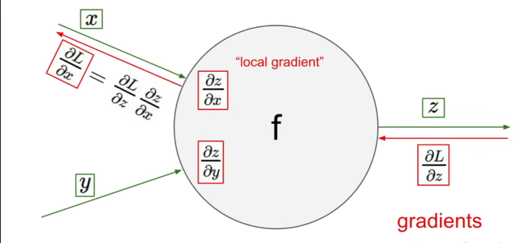
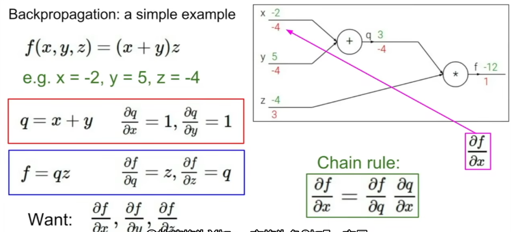

cs231n-lec4
计算图
计算原理
图中的每个结点是计算的一个步骤，每个运算结点只管输入该结点的数和输出的计算结果

正向传播时，计算相对输入数的梯度，反向传播回来的时候，能通过链式法则计算处损失函数相对此处的梯度。所以只需要在每个结点处计算局部梯度
比如 ，计算梯度的过程是利用链式法则反向计算偏导数的过程

计算图结点的计算粒度可以通过我们自己定义，最简单的是每个结点只计算加法，乘法等运算的梯度，也可以定义更复杂函数的结点，比如 sigmoid 函数
这是一个计算粒度和计算图复杂性的权衡
当输入是向量时，计算梯度要用 Jacobian 矩阵，详见 自动梯度
模块设计
每个计算图都是要给模块，需要给模块设置前向传播计算输出以及反向传播计算本地梯度。比如乘法模块类似：
1 | class MultiplyGate(object): |
深度学习框架
本博客所有文章除特别声明外，均采用 CC BY-NC-SA 4.0 许可协议。转载请注明来自 Ruoy's Blog！

评论